Uniformed personnel serving in the Central Armed Police Forces (CRPF, BSF, CISF, ITBP, SSB), the Indian Armed Forces, and State Police formations face prolonged operational conditions—hazardous terrain, remote postings, circadian disruptions, and intense operational tempo. Conventional stress identification across security forces remains fundamentally reactive, relying on lagging peer observation after critical psychological burnout or disciplinary incidents manifest.
SentinelWell AI transforms this paradigm from reactive intervention to proactive prevention. By integrating non-invasive, objective administrative duty records (consecutive duty days, night shift cycles, deployment duration, leave denial patterns) with voluntary self-reported wellness telemetry, the platform computes a continuous 4-band Welfare Risk Index backed by Explainable AI (TreeExplainer SHAP). It empowers welfare officers to initiate timely rest cycles and counseling while strictly safeguarding personnel confidentiality and ensuring zero punitive surveillance.
The system utilizes a 3-tier decoupled microservices topology engineered for high resilience, zero-leakage RBAC boundaries, and sub-15ms ML inference:
The sequence below models the operational path from voluntary self check-in submission to real-time ML risk scoring and welfare officer triage:
| Step | Origin / Actor | Target / Interface | Operational Action & Payload |
|---|---|---|---|
| 01 | Personnel (Ground Officer) | Frontend Web Portal | Submits voluntary daily check-in (Stress: 1–10, Sleep: 1–5, Energy: 1–5, Workload: 1–5). |
| 02 | Frontend Web Portal | Express API Server | POST /api/wellness/assessment with JWT authorization token. |
| 03 | Express API Server | Aiven Cloud MySQL | Persists WellnessAssessment record and queries 30-day duty history. |
| 04 | Express API Server | FastAPI ML Service | Dispatches feature vector: [dutyDays, nightShifts, deployDays, leaveRej, dutyHrs, sleepHrs, fatigue]. |
| 05 | FastAPI ML Engine | Internal Feature Pipeline | Computes derived fatigue variables: SDI (Sleep Deprivation Index) & Burnout Velocity. |
| 06 | FastAPI ML Engine | Dual-Model Inference | Executes Isolation Forest for anomaly scoring and LightGBM for multi-class risk probabilities. |
| 07 | FastAPI ML Engine | SHAP TreeExplainer | Extracts exact Shapley attributions |ϕi| to identify top 3 primary trigger stressors. |
| 08 | FastAPI ML Engine | Express API Server | Returns continuous 0–100 score, risk category (`HIGH`), and natural-language primary triggers. |
| 09 | Express API Server | Aiven Cloud MySQL | Stores RiskAssessment entry. If score $\ge 61$, automatically creates a live Alert. |
| 10 | Express API Server | Frontend Web Portal | Pushes confirmed assessment to user with updated personal 6-month wellness trajectory. |
| 11 | Welfare Officer (WO-208) | Welfare Command Center | Detects alert in triage queue; inspects continuous risk gauge (e.g. 64 High) and SHAP factor bars. |
| 12 | Welfare Officer (WO-208) | Express API Server | Issues proactive welfare intervention (e.g., 48-hr Rest Cycle); logged into immutable audit register. |
The prediction engine ingests 8 primary attributes categorized into administrative duty parameters and voluntary wellness telemetry:
| Feature | Type | Domain | Operational Definition |
|---|---|---|---|
| x₁: consecutive_duty_days | Float | [0, ∞) | Continuous duty days logged without a mandatory 24-hr rest window. |
| x₂: night_shifts_last_30d | Float | [0, 30] | Cumulative night watch duties logged between 2200 and 0600 hrs in past 30 days. |
| x₃: deployment_duration_days | Float | [0, ∞) | Cumulative active days deployed at forward or high-altitude outposts. |
| x₄: leave_rejected_count | Float | [0, ∞) | Number of formal leave requests unapproved or deferred in past 12 months. |
| x₅: transfer_frequency_2y | Float | [0, ∞) | Battalion or company reassignment frequency across past 24 months. |
| x₆: duty_hours_weekly | Float | [0, 168] | Aggregated duty hours on active roster during a 7-day period. |
| x₇: avg_sleep_hours | Float | (0, 24] | Voluntary, self-reported average sleep duration per 24-hour cycle. |
| x₈: self_reported_fatigue | Integer | [1, 5] | Subjective exhaustion rating (1 = Fully Rested, 5 = Severe Exhaustion). |
To model non-linear physiological strain, two derived variables are calculated prior to model scoring:
The inference engine pairs unsupervised behavioral anomaly detection with supervised multi-class gradient boosting:
An Isolation Forest model trained on normative duty scheduling profiles evaluates the augmented feature vector. It computes the anomaly score:
The LightGBM classifier evaluates the 11-dimensional vector X = [x₁, ..., x₈, SDI, BV, siso] to generate a calibrated probability distribution across 4 welfare risk tiers:
To eliminate discrete step-function jumps, a continuous risk index S is formulated via inner product with risk band weights:
For every generated score, exact Shapley values are calculated to identify the top 3 contributing stressors:
The operational command center presents high-level force distributions paired with an actionable triage roster.
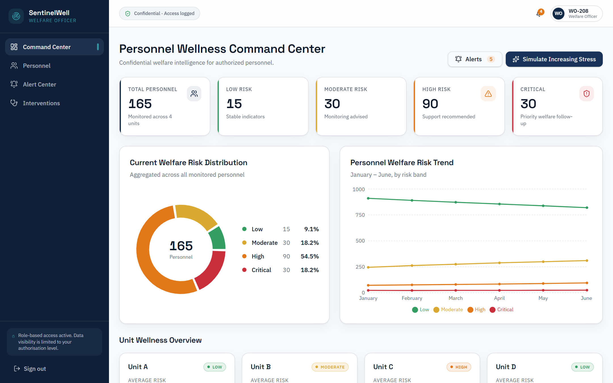
Below the macro KPI summary, the Command Center displays comparative unit overview cards alongside the High-Risk Personnel Master Table:
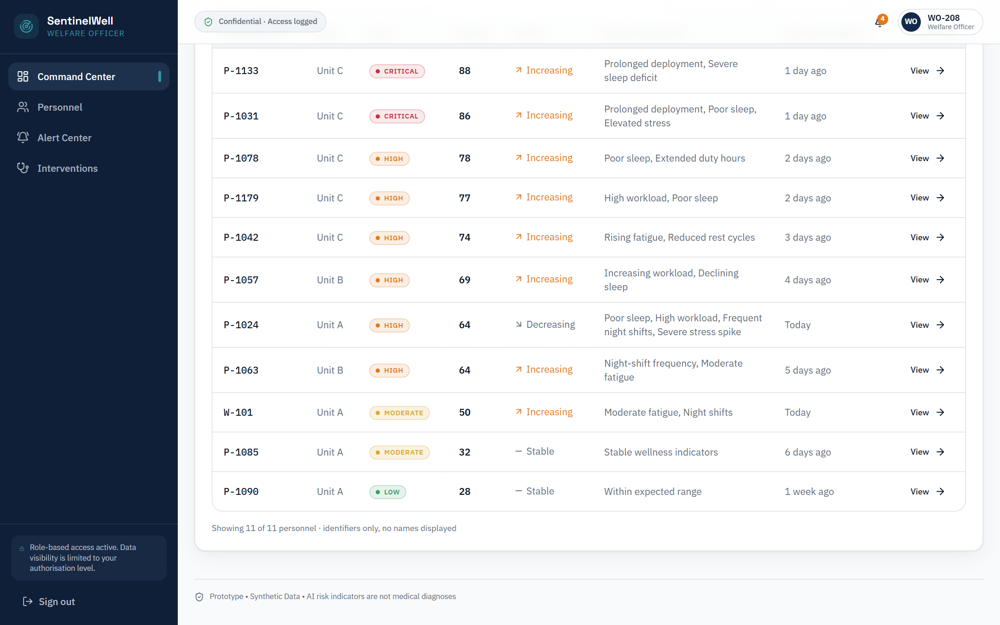
Provides deep, transparent insight into individual risk drivers without psychiatric labeling. The upper viewport presents the continuous risk gauge and relative SHAP factor attribution bars:
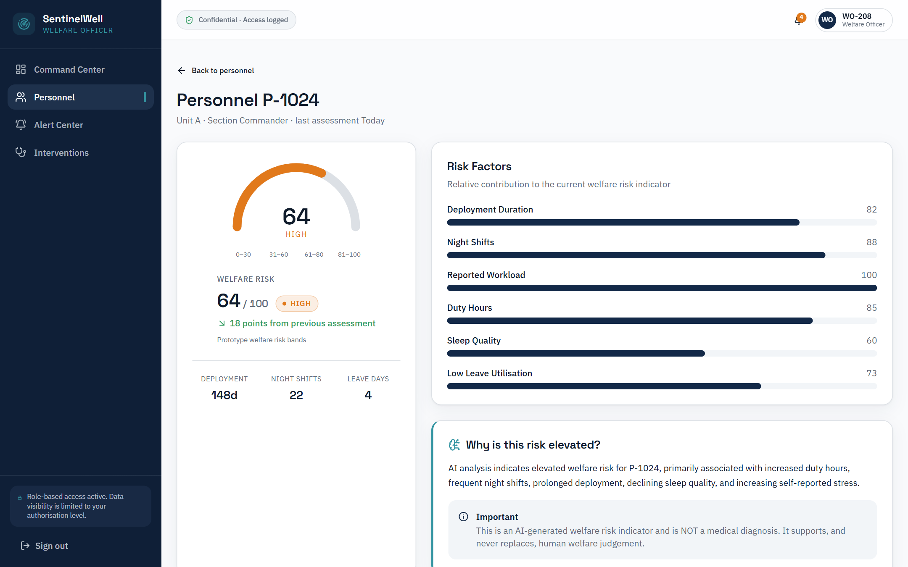
The lower section of the Risk Radar tracks 6-month longitudinal telemetry trends and provides dedicated human-in-the-loop triage action triggers:
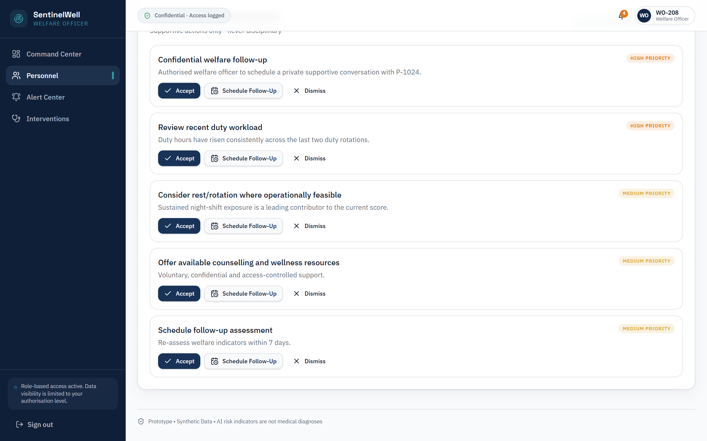
Enables authorized caseworkers to track intervention lifecycles and monitor automated stress alerts in real time:
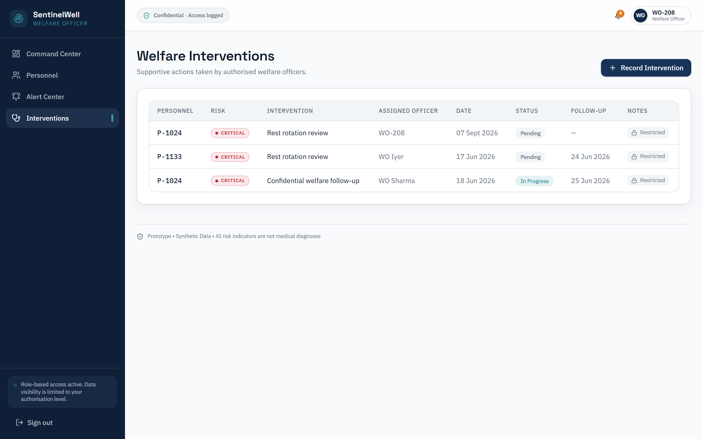
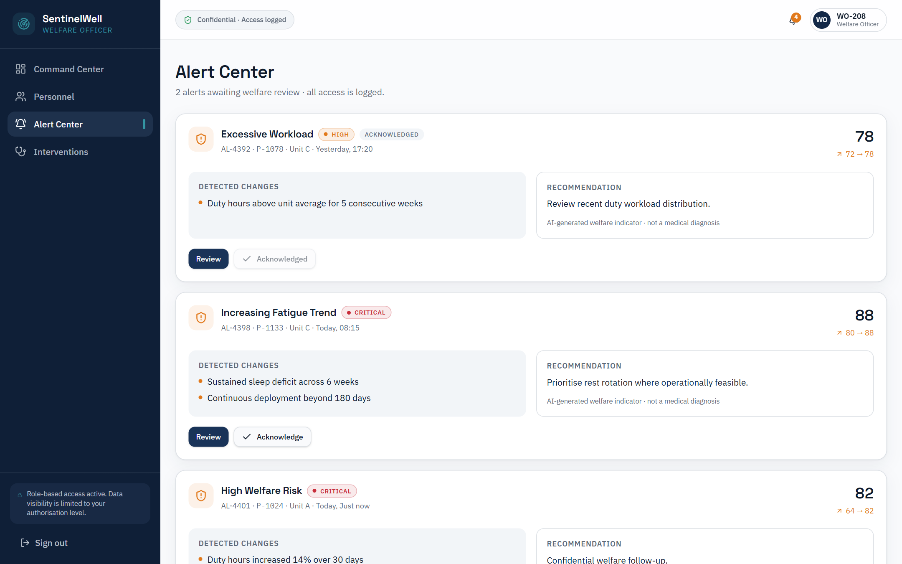
Engineered for senior leadership and battalion commanders to assess operational readiness while strictly air-gapping individual personal records:
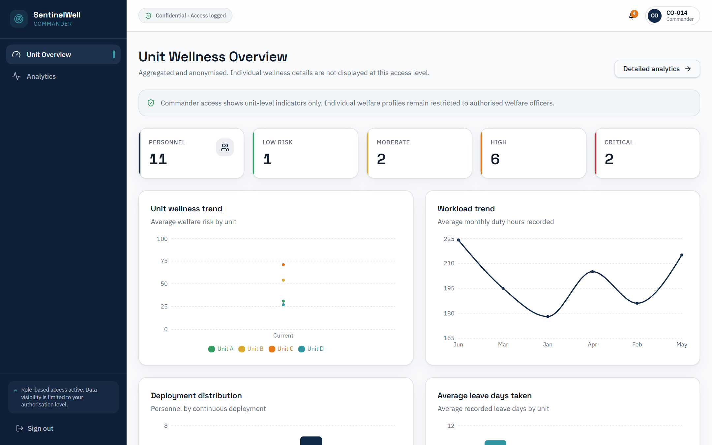
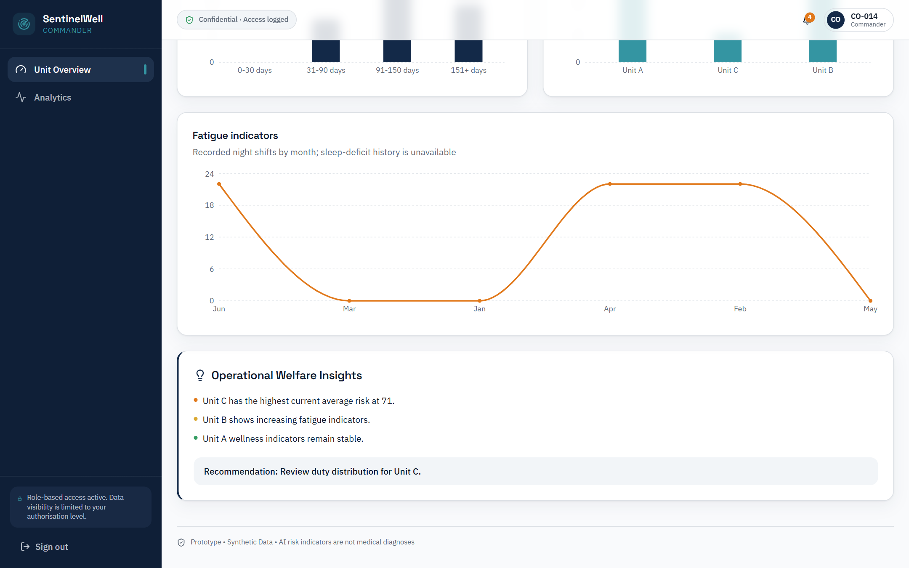
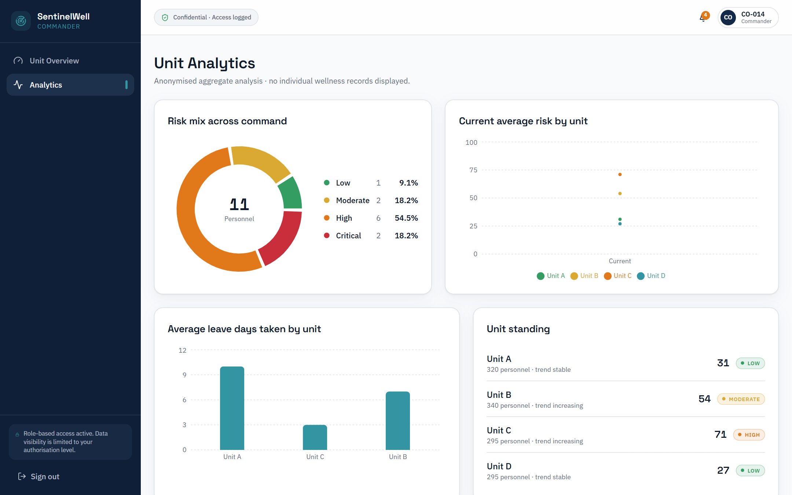
A voluntary, confidential mobile-responsive portal empowering jawans and officers with self-monitoring tools:
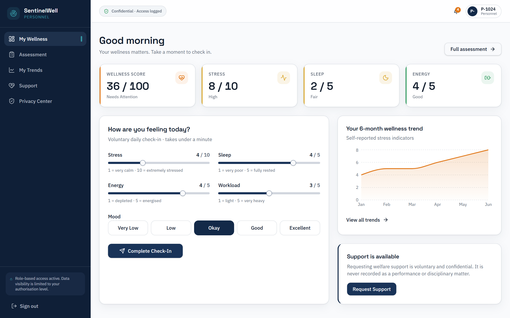
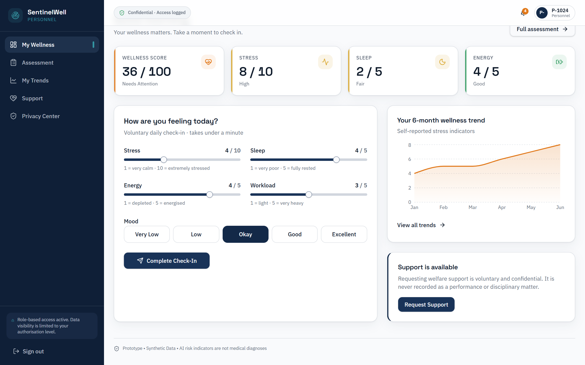
Puts the individual personnel in full control of their data, establishing organizational trust:
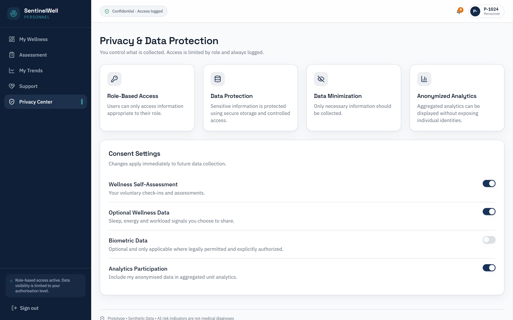
Enterprise-level governance tools and live interactive simulation for evaluation and demonstration:
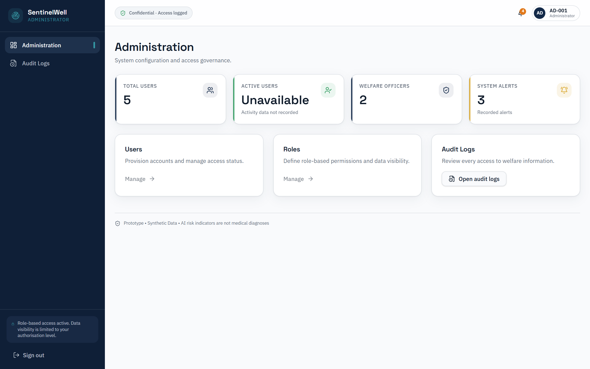
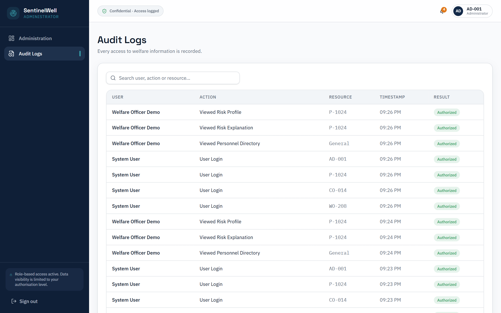
| Method | API Endpoint | Authorized Roles | Function |
|---|---|---|---|
POST |
/api/auth/login |
Public | Signs and returns JWT access + refresh tokens. |
GET |
/api/personnel |
Welfare Officer, Admin | Fetches prioritized welfare triage queue. |
GET |
/api/personnel/:id |
Welfare Officer, Admin | Retrieves individual risk radar & SHAP triggers. |
POST |
/api/wellness/assessment |
Personnel | Records voluntary check-in; invokes ML engine. |
GET |
/api/analytics/command |
Commander, Admin | Fetches anonymized unit readiness curves. |
POST |
/api/interventions |
Welfare Officer | Logs mandatory rest cycle or roster adjustment. |
A phased deployment blueprint designed to transition SentinelWell from the SIH prototype to CAPF field formations:
Developed and submitted for the Smart India Hackathon (SIH) 2026 under Problem Statement ID 26186 (Ministry of Home Affairs / CRPF):
| Team Member | Engineering Discipline & Core Responsibilities |
|---|---|
| Puru Yadav | Team Leader · AI / ML & Predictive Analytics Lead |
| Nishant Pastor | Frontend Architecture & UI/UX Specialist |
| Raghav Jhalani | Data Engineering & Pipeline Architecture |
| HarshVardhan Khare | Model Optimization & Machine Learning Benchmarking |
| Aarti Misra | Quality Assurance & Defense Domain Research |
| Sarthak Mittal | Backend Architecture & Cloud Deployment |